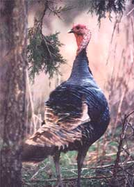
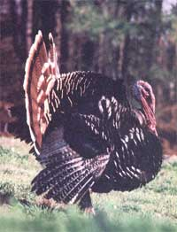

Your basic farmyard gobbler may be something of a birdbrain, but his untamed cousin is one of the craftiest critters in the woods.
BENJAMIN FRANKLIN KNEW THAT AMERICA WAS FULL OF TURKEYS, which he considered to be hardy, intelligent, and beautiful birds. In fact, he even lobbied to have the wild turkey ( Meleagris gallopavo ) designated as young America's national symbol. Looking back on it now-especially in light of the secondary meaning attached to the word turkey in modern American English usage-it's just as well that Uncle Ben's candidate was soundly defeated by the rival Bald Eagle party.
But in fairness to the good Mr. Franklin, we should keep in mind that beauty is in the eye-however nearsighted or jaundiced that organ may be-of the beholder. And Ben's fine-feathered friend does have a few attributes that should appeal to anyone with good taste . . . especially at the dinner table.
TURKEY SCHOLARS (yes, there are such beings) have estimated that North America's pre-Columbian wilderness supported more than 10 million wild turkeys. Of course (the familiar story), by 1900 the big birds were nearing extinction because of habitat reduction and overhunting. Today-according to the latest estimate released by the National Wild Turkey Federation-the continental U.S. supports a population of between 2 and 2.5 million wild turks. In fact, every state save Alaska is now home to a self-sustaining wild turkey population. That's a remarkable comeback, due almost entirely to strict controls on hunting and the advent of innovative management programs involving restocking depleted areas as well as introducing starter populations of the bird to new habitat.
WHETHER OR NOT THE WILD TURKEY IS CONSIDERED BEAUTIFUL depends, in more ways than one, upon individual point of view. When seen from a distance and in the right light, the wild gobbler glows with iridescent red, green, blue, and copper tones painted on a sleek, dark background. But if you single out just the head and neck for inspection, you'll be confronted with a bald, misshapen mess.
Among the most obvious of M. gallopavo's facial beauty problems are the fatty wattles dangling from the throat and projecting from above the bill and the equally unsightly caruncles of the neck. However, these gross appendages are also remarkable in their ability to change size, shape, and color to reflect the mood of their owner. A sexually aroused tom might, for instance, alter the coloration of his head and its protuberances from gray-blue to red-then back to blue again, seemingly on command.
In addition to his wattles and caruncles, the adult tom (and the occasional hen) also sports a beard-a collection of primitive, black contour feathers that are stiff, straight, and up to a foot in length (eight inches or so for bearded females). Double-bearded gobblers are common, triple beards aren't too unusual, and males with five beards or more turn up from time to time (especially-and your guess is as good as mine as to why-in Texas).
The wild turkey's bulky body gives a false impression of great weight. In fact, an adult wild tom generally weighs no more than 15 to 18 pounds, with hens averaging a petite 9 to 11 pounds. (Those 25- and 30-pound gobblers that hunters often brag about bagging are rare almost to the point of being mythical.)
But still, 9 to 18 pounds is a lot of bird-which makes it rather surprising that the hefty fowl are such strong fliers. Turkeys need no runway for takeoff, and can climb almost vertically from a standing start-much in the manner of their distant relatives the pheasants. They fly low, straight, and fast (around 40 miles per hour) and are graceful gliders . . . but, for all of that, they generally prefer walking and running to winging it.
THE WILD TURKEY'S DREAD OF RAPTORS and other predators is instinctive and strong-but, strangely, its fear of humans may be an acquired trait. In pre-Columbian times, turkeys seemingly had little aversion to people, which made them easy prey even for hunters equipped only with the most primitive of weapons. But over the centuries, as hunting pressure continually mounted and weapons became more and more sophisticated, so also increased M. gallopavo's expertise in avoiding Homo sap. These days, a big gobbler is every bit as elusive as a wise old buck deer. Part of the reason for this is that the turkey's vision and hearing are superb. (The big bird's sense of smell, however, stinks.)
A LARGE GOBBLER WILL GOBBLE as much as two pounds of food per day, and will eat whatever he can scratch up when he's hungry. But when times are good, wild turkeys prefer dining on mast (fallen nuts). They also consume insects (grasshoppers are their candy), crustaceans, and small snakes (for protein), and will nibble on various succulent plants (to get their vitamins). In winter, if the snow gets too deep or crusty to scratch through, these cagey fowl just drop in behind a herd of deer or elk and peck for food in the bare spots where their hooved predecessors have pawed away the snow.
Sometime after the evening meal and always before dark, wild turkeys seek out tall trees in which to snooze safe above the world of things that go bump in the night. Preferred roost trees have large, sturdy limbs that project over water or a steep drop-off, providing a degree of added protection against mammalian predators. Several birds may share a particularly desirable tree, or they may sleep in separate "bedrooms." Only after the sun is well up will the rested turkeys leave their roosts and wing their way to breakfast.
THE ONSET OF SPRING MATING SEASON is the Big Event in a wild turkey's year, and is sung in with gusto by the suddenly amorous toms. Courtship gobbling is primarily a sunrise activity, engaged in while the birds are still on their roosts. If a tom's mating call elicits an answer, he'll gobble again, and with greatly increased enthusiasm. When the tom gets sufficiently excited, he'll leave his roost and seek out the respondent to his gobbles . . . which might be a hen, a rival tom, or something else entirely (like a hunter with a turkey call and a shotgun).
When a love-struck tom draws near to the object of his intentions, he'll display his tail feathers in a peacocklike (though more modest) copper-toned fan, spread and lower his wings, and commence strutting his stuff. At the same time, the lustful lummox will draw back his head, fill his lungs to capacity, then exhale in a burst of turkey pillow talk. (The great Audubon called this phenomenon "pulmonic puff.")
As with males of most species (humans not excluded), wild turkey gobblers on the make are extremely hostile to rival suitors. Consequently, should two strutting toms meet, a battle generally ensues. The combatants lock beaks and use their leg spurs (which can be up to 24 millimeters in length and plenty sharp) to slash at each other's breasts. Such a tussle can last for hours, but rarely if ever ends in death-though head and neck injuries are common.
Once it's established which tom is the stronger, the defeated bird will flop down on the ground with his neck outstretched-a signal of submission that's always heeded by the victor, who backs off and allows the chicken turkey to retreat. In this manner a strong tom can assemble a harem of four to six hens and have their feathered affections all to himself.
Toward the end of mating season the harem breaks up, the hens wandering off to build nests consisting of shallow excavations scratched into the earth then hastily lined with leaves and other forest-floor debris. But even if they're slovenly builders, wild turkey hens always conceal their nests carefully, and cover their eggs with debris each time they leave the area to feed. .A single hen often lays well over a dozen eggs, and several hens may share one nest. (Audubon reported finding 42 eggs in a single nest, with three hens in attendance.) The incubation period is 28 days, with a hatch success rate of 35% (which ain't so bad as such things go).
Newborn turkeys-called points-are brooded on the ground until they're old enough to fly up to roost in trees at night. (Generally, points can fly short distances at two weeks of age, and are accomplished aviators at six.) If a hews points are threatened by a predator, Mom sends them into hiding, then sounds a plaintive squawk upended to draw the predator's attention away from her young. She may even feign injury in order to fool a predator into thinking she's easy meat, and so lure the four-legged hunter into following her on a wild turkey chase leading far away from the hidden brood.
AS TABLE FARE, wild turkey is tender, moist, and delicious, and-since it contains very little fat, plenty of protein, and no commercial poultry-feed additives or postmortem injected butter-it's one of the most wholesome and nutritious of all meats. In fact, better gobbling can't be got.
In retrospect, perhaps old Ben Franklin's taste in birds wasn't so bad after all . . . at least at the dinner table.
|
 PHOTOS BY WILLIAM S. LEA |
 |
|